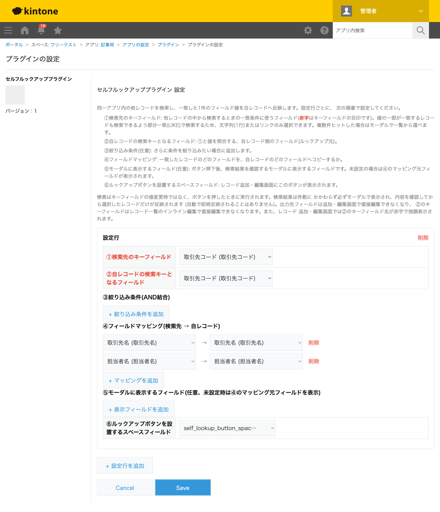
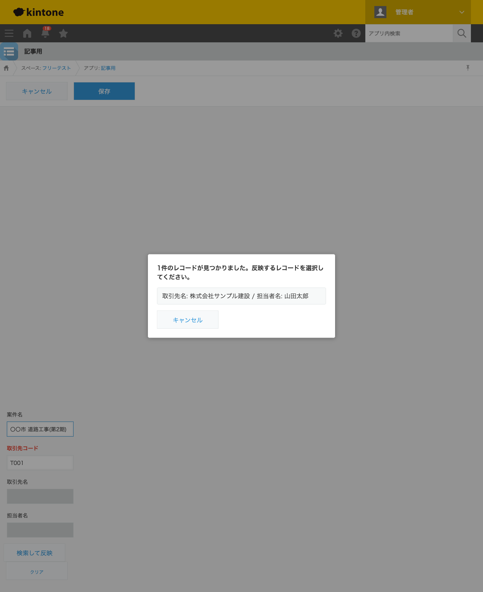
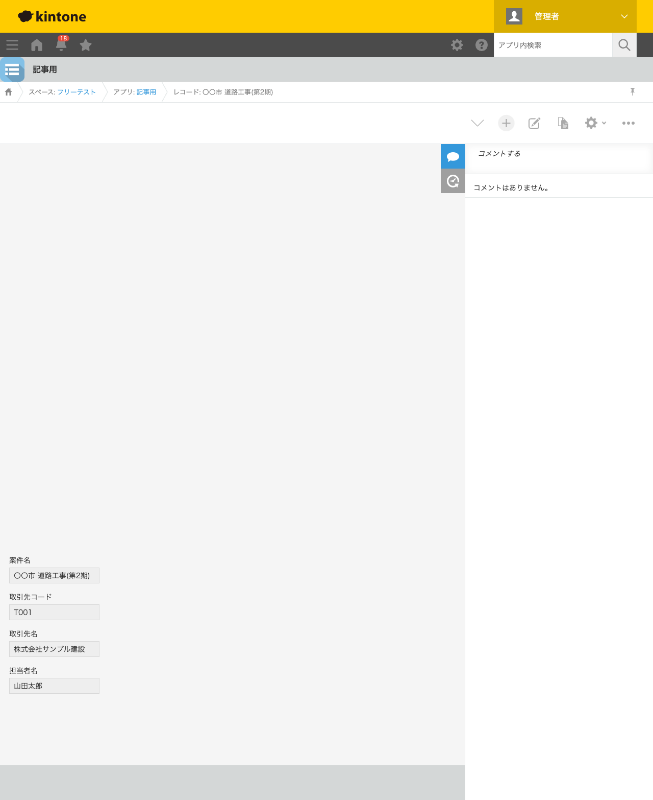

GovAppsプラグイン 安全性を確認できる無料kintoneプラグイン集
案件管理アプリで同じ取引先の案件を2件目以降登録するとき、取引先名や担当者名をまた手入力するのは 二度手間ですし、表記ゆれの原因にもなります。kintone標準の「ルックアップフィールド」は参照先を 別アプリにしか設定できないため、こうした「同一アプリ内での参照」には使えません。この記事では、 無料プラグインで同一アプリ内の他レコードを検索し、値を自動転記する方法を、実際の設定画面と 検索結果つきで解説します。
kintone標準の「ルックアップフィールド」は、参照先を別アプリにしか設定できません。 「同じアプリの中にある、条件に一致する別のレコード」を検索して値を引く、という使い方には対応して いません。標準機能で近いことをしようとすると、取引先コードごとに専用のマスタアプリを新規に作り、 そちらへルックアップする構成に作り替える必要があり、既存アプリの改修コストがかかります。
「同一アプリ内の別レコードを検索して値を転記する」機能を用意する方法は、大きく4つあります。 それぞれの向き不向きをまとめました。
| 方法 | 向いている場合 | 注意点 |
|---|---|---|
| マスタアプリを新設して標準ルックアップ | マスタデータの管理主体を明確に分けたい場合 | アプリを新規に作り、既存データを移行する手間がかかる |
| JavaScriptを自作する | 社内に開発者がいて、独自の検索条件・UIが必要な場合 | 同一アプリへのREST検索・複数件ヒット時のUI・自己参照の除外などを自前で実装・保守する必要がある |
| 有料の他社プラグイン | 予算があり、手厚いサポートを求める場合 | 月額課金が発生する。ソースコードが非公開で、外部通信の有無を利用者側で確認しにくいことが多い |
| GovAppsプラグイン(このプラグイン) | 無料で試したい、社内・庁内でセキュリティを確認してから導入したい場合 | 検索先キーフィールドは部分一致(LIKE)対応の文字列(1行)・リンクのみ選択可 |
GovAppsのプラグインはすべて無料・広告なしで、追加課金なしで使い続けられます。 ソースコードはGitHubで全公開しているオープンソースなので、 「本当に外部と通信していないか」を自治体・企業のセキュリティ担当者自身の目で確認できます (このプラグインも個別ページにセキュリティレビュー結果を掲載しています)。
セルフルックアッププラグインは、検索先・自レコードのキー フィールド、フィールドマッピングなどを設定行として登録するだけです。今回は「案件名」「取引先コード」 「取引先名」「担当者名」を持つ案件管理アプリで設定しました。

あらかじめ「〇〇市 道路工事(第1期)」(取引先コード: T001、取引先名: 株式会社サンプル建設、 担当者名: 山田太郎)というレコードを登録しておきます。同じ取引先の2件目の案件 「〇〇市 道路工事(第2期)」を新規登録する際、取引先コードに「T001」と入力してボタンを押すと、 一致したレコードの内容を確認するモーダルが表示されます。1件しかヒットしない場合も 自動で即時反映されることはなく、必ず内容を確認してから選択します。

候補をクリックすると、取引先名・担当者名のフィールドに値が反映されます。そのまま保存すると、 手入力なしで取引先名・担当者名が転記された状態でレコードが登録されます。
